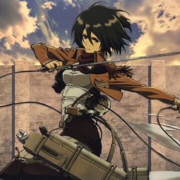
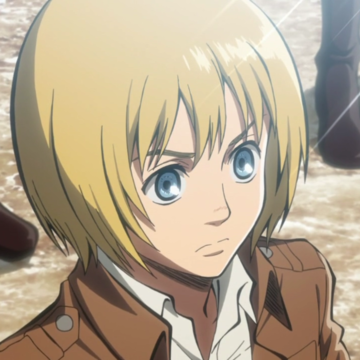
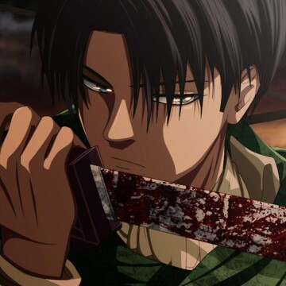

Main Characters
*Click on the image for a video*

Eren Yeager
Eren Yeager is the main protagonist of Attack on Titan. He possesses the ability to transform into a Titan and fights to protect humanity from the Titans.

Mikasa Ackerman
Mikasa Ackerman is Eren's adoptive sister and a skilled soldier who fights alongside him to protect humanity. She is also one of the last remaining members of the Ackerman clan.

Armin Arlert
Armin Arlert is one of Eren's best friends and a strategic genius. He is often relied upon to come up with plans to defeat the Titans and protect humanity.

Levi Ackerman
Levi Ackerman is a skilled soldier and captain of the Survey Corps. He is known for his exceptional combat skills and his ability to take down Titans with ease.